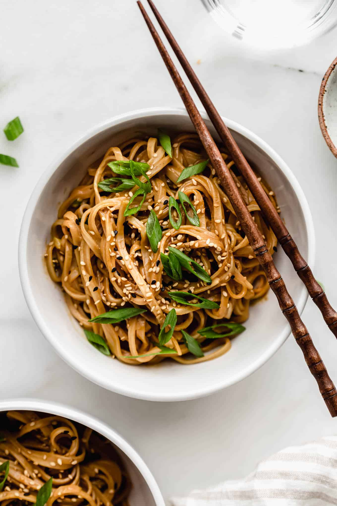

Peanut Butter Noodles

Peanut butter and noodles are not something you would think go together, especially as part of an Asian cuisine. Yet, just one bite of these delectable noodles will change your mind. This is the recipe my great great great grandmappy used to make. Enjoy!
Ingredients
- 16 ounces brown rice noodles
- 3 large cloves garlic
- 1 tbsp oil
- 2/3 cup creamy peanut butter
- 4 tbsp soy sauce
- 1/2 cup hot water
- 1 tbsp rice vinegar
- 1 tbsp toasted sesame oil
Directions
- Bring a large pot of water to a boil and cook noodles according to package instructions.
- Finely mince the garlic and add to a saute pan with 1 tbsp of oil. Any oil will work here, I used olive.
- Saute over low heat for 2-3 minutes or until golden brown.
- Remove from heat and add in all remaining sauce ingredients (start with 1/3 cup of water) and whisk together until smooth, adding more water as needed to reach your desired consistency.
- Add about 1/2 of the sauce to cooked pasta and mix together. I intentionally made extra sauce in case you want to add some chicken, tofu, veggies etc.
- Serve with crushed peanuts, scallions, or red pepper flakes and enjoy! Delicious alongside veggies and protein of choice.